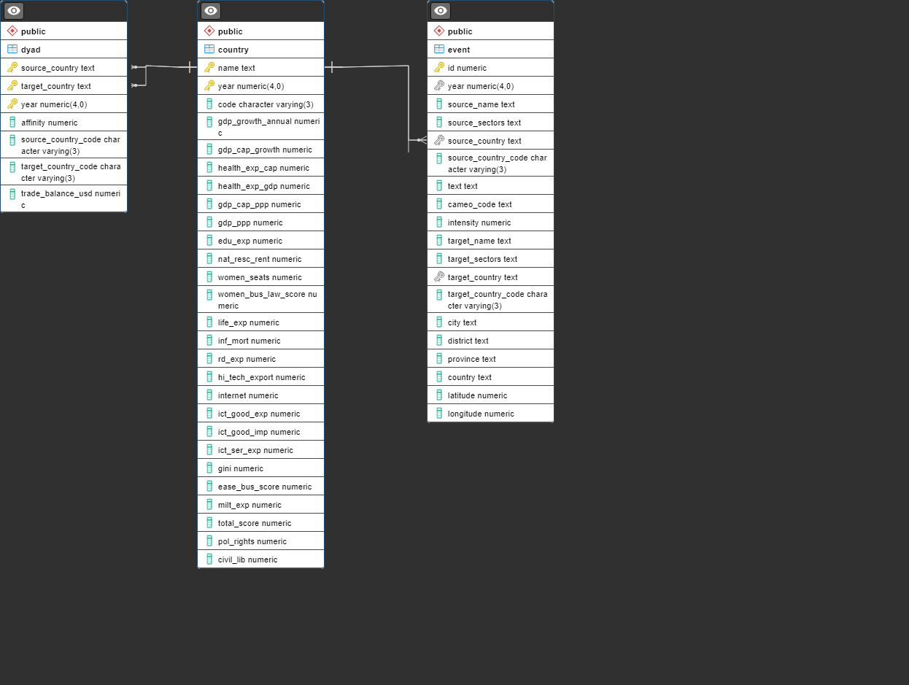

Predicting Interstate Affinity using Machine Learning/Database Building
Link to Final Paper/Github Repository
https://github.com/aldenfelix/Predicting-Interstate-Affinity
https://github.com/aldenfelix/International-Relations-Database
Abstract
Machine learning has been able to accurately predict conflict at the local and state level. This study examines if machine learning can be used to make accurate predictions of generalized relationships between states, with the United States as the base of reference. International relations were measured using an aggregate affinity score derived from event data, and various socioeconomic and demographic factors were used as predictive variables. Multiple models, including a regression and classification random forest and a deep learning model, were built and evaluated in regards to their accuracy in predicting interstate affinity. The strongest predictors of interstate affinity varied significantly depending on the model.
Methods & Data
This study employs machine learning methods to predict affinity between states using socioeconomic and demographic variables. These variables are dyadic, for example trade flow between a pair of states, and also variables unique to a state, such as GDP, population, military expenditure, education and gender statistics, and other relevant economic and social factors.
The dependent variable is a measure of a state’s relationship with the base country, the US in this study, and takes two forms. Using CAMEO codes and intensity scores found in coded event data, a continuous dependent variable is derived that represents general affinity between two states. The dependent variable’s other form is a categorical transformation of the continuous affinity variable.
The machine learning algorithms applied in this study are a random forest classification model and a random forest regression model in addition to a deep learning model.
Data Sources
This study uses data from various sources, including the World Bank, International Monetary Fund, United Nations, Freedom House, and the Integrated Crisis Early Warning System Coded Event Database (ICEWS).
Project Presentation
Database Building
Alden Felix
Database Purpose
Studies in international relations often involve numerous variables that cannot be found within a single dataset. Therefore, this project seeks to provide a high quality yet diverse database that will aid relevant studies in their data collection process. Data is collected from multiple credible sources, wrangled, and stored in a PostgreSQL server using R, and then deployed to the cloud in the form of an R Shiny application as proof of concept. The dataset currently includes coded event data, countries and their socioeconomic and demographic data, and dyadic variables such as trade between a pair of states, all for the period from 2015 to 2019.
Methods
The data was manually collected and imported into R studio and then wrangled into appropriate data types and formats before being exported into a local PostgreSQL server using the ‘DBI’ library. A relation schema was made beforehand and empty tables were created to store the data. Once the data was stored correctly in the local PostgreSQL server, it was converted into SQLite format using DB Browser for SQLite. An application was built using R Shiny that allows basic searching and viewing of the database, and deployed to the cloud as proof-of-concept. Below is the relation schema for the database.
Database Relation Schema

Database Project Presentation
Shiny App for Database Exploration
Please use this direct link to the application if the below instance does not load. https://aldenfelix.shinyapps.io/database_project/
References
[1] Kuhn, & Johnson, K. (2013). Applied predictive modeling. Springer.
[2] Halterman, A., Bagozzi, B. E., Beger, A., Schrodt, P., & Scraborough, G. (2023, April 3). PLOVER and POLECAT: A New Political Event Ontology and Dataset. https://doi.org/10.31235/osf.io/rm5dw
[3] Helle, V., Negus, A.S., & Nyberg, J. (2018). Improving armed conflict prediction using machine learning : ViEWS+.
[4] Pauls, & Cranmer, S. J. (2017). Affinity communities in United Nations voting: Implications for democracy, cooperation, and conflict. Physica A, 484, 428–439. https://doi.org/10.1016/j.physa.2017.04.177
[5] Perry. (2013). Machine Learning and Conflict Prediction: A Use Case. Stability (Norfolk, VA ), 2(3), 56–. https://doi.org/10.5334/sta.cr
[6] Bazzi, Blair, R. A., Blattman, C., Dube, O., Gudgeon, M., & Peck, R. (2022). The Promise and Pitfalls of Conflict Prediction: Evidence from Colombia and Indonesia. The Review of Economics and Statistics, 104(4), 764–779. https://doi.org/10.1162/rest_a_01016